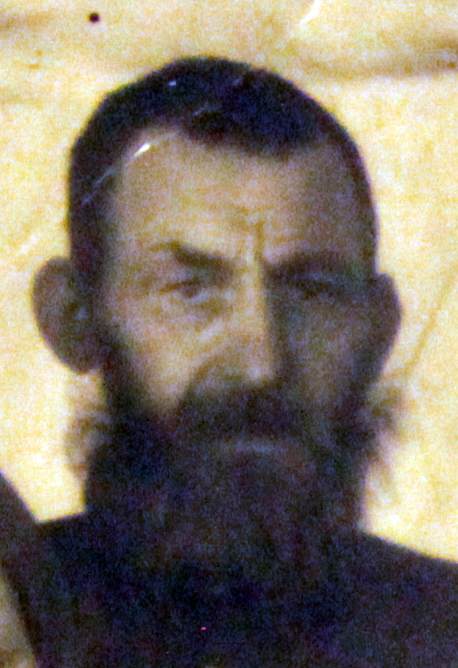

Герилович Федор Викентьевич (1887 - 1958)
Продолжительность жизни: 71
Социальное происхождение: лишенец
Отец: Герилович Викентий
Мать: Герилович Надежда/Вера
Брат: Герилович Иван Викентьевич (1881 - 28.07.1931)
Жена: Герилович Евдокия Афанасьевна (11.1894 - 11.1954)
Дочь: Саулевич (Герилович) Варвара Федоровна (18.12.1910 - 24.12.1985)
Дочь: Кононенко (Герилович) Анна Федоровна (14.10.1913 - 03.11.2001)
Дочь: Притула (Герилович) Любовь Федоровна (15.04.1926 - 06.06.2014)
Сын: Герилович Леонид Федорович (01.01.1927 - 25.01.1995)
Сын: Герилович Николай Федорович
Дочь: Голощапова (Герилович) Александра Федоровна (1930)
Родился: 1887. Отец: Герилович Викентий. Мать: Герилович Надежда/Вера.
Родилась дочь: Саулевич (Герилович) Варвара Федоровна, 18.12.1910. Мать: Герилович Евдокия Афанасьевна.
Родилась дочь: Кононенко (Герилович) Анна Федоровна, 14.10.1913. Мать: Герилович Евдокия Афанасьевна.
Родилась дочь: Притула (Герилович) Любовь Федоровна, 15.04.1926. Мать: Герилович Евдокия Афанасьевна.
Родился сын: Герилович Леонид Федорович, 01.01.1927, г. Назарово. Мать: Герилович Евдокия Афанасьевна.
Женился. Жена: Герилович Евдокия Афанасьевна.
Родился сын: Герилович Николай Федорович. Мать: Герилович Евдокия Афанасьевна.
Родилась дочь: Голощапова (Герилович) Александра Федоровна, 1930. Мать: Герилович Евдокия Афанасьевна.
Умер: 1958, с. Селедково.
 . . . |